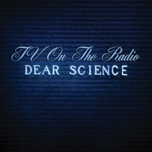

DLZ
Tv On The Radio
original video

Congratulations on the mess you made of things
恭喜你，把一切搞得一团糟。
I'm trying to reconstruct the air and all that brings
我试图重塑这片空气，以及它所承载的一切。
And oxidation is the compromise you own
氧化是你必须承担的妥协。
But this is beginning to feel like the dog wants a bone, say
可这一切开始像狗急着啃骨头，喂——
La, la, la, la, la, la, la~la
啦啦啦，啦啦啦，啦~啦。
La, la, la, la, la, la, la~la
啦啦啦，啦啦啦，啦~啦。
La, la, la, la, la, la, la~la
啦啦啦，啦啦啦，啦~啦。
La, la, la, la, la, la, la~la
啦啦啦，啦啦啦，啦~啦。
You force your fire and then you falsify your deeds
你强行点燃大火，却又伪造你的行为。
Your methods dot the disconnect from all your creeds
你的手段全然背离了你的信条。
And fortune strives to fill the vacuum that it feeds
你用金钱拼命填补自己制造的虚无。
But this is beginning to feel like the dog's lost a lead, say
可这一切开始像狗挣脱了牵绳，喂——
La, la, la, la, la, la, la~la
啦啦啦，啦啦啦，啦~啦。
La, la, la, la, la, la, la~la
啦啦啦，啦啦啦，啦~啦。
La, la, la, la, la, la, la~la
啦啦啦，啦啦啦，啦~啦。
La, la, la, la, la, la, la~la
啦啦啦，啦啦啦，啦~啦。
This is beginning to feel like the long winded blues of the never
这一切渐渐像无尽悲歌的漫长叹息。
This is beginning to feel like it's curling up slowly and finding a throat to choke
这感觉缓缓盘绕，伺机寻找一个喉咙勒紧。
This is beginning to feel like the long winded blues of the never
这一切仿佛化作了一声悠长叹息。
Barely controlled locomotive consuming the picture and blowing the crows, the smoke
失控的火车吞噬了画面，驱散乌鸦与烟雾。
This is beginning to feel like the long winded blues of the never
这一切正如同无数的哀叹不断弥漫
Static explosion devoted to crushing the broken and shoving their souls to ghost
静电爆炸，摧毁破碎者，将他们的灵魂驱逐为幽灵。
Eternalized, objectified, you set your sights so high
永恒化，物化，你的目标如此高远。
But this is beginning to feel like the bolt busted loose from the lever
可这一切开始像杠杆的螺栓脱落般失控。
Never mind, death professor
别在意了，死亡教授。
Your structure's fine, my dust is better
你的统治固若金汤，我虽微如尘埃却更胜你一筹。
Your victim flies so high
你的受害者飞得如此之高，
All to catch a bird's eye view of who's next
只为俯瞰，谁会成为下一个目标。
Never you mind, death professor
别无所谓了，死亡教授。
Cause love is life, my love is better
因为爱就是生命，我的爱更美好。
Your victim flies so high
你的受害者飞得那么高，
Eyes could be the diamonds confused with who's next?
目光闪烁，像钻石般迷茫，谁会是下一个？
Never you mind, death professor
不必在意，死亡教授。
Your shocks are fine, my struts are better
你的震惊无碍，我的支撑更强。
Your fiction flies so high
你的虚构如此宏伟
Y'all could use a doctor who's sick, who's next?
你们都需要一个生病的医生，下一个是谁？
Never you mind, death professor
别在意了，死亡教授。
Electrified, my love is better
电光四射，我的爱更胜一筹。
It's crystallized, so am l
它已结晶，我亦如此。
All could be the diamond fused with who's next
这一切如钻石般闪耀，又将与谁交织缠绕
This is beginning to feel like the dawn of a loser forever
这感觉像失败者的黎明，永无尽头。
This is beginning to feel like the dawn of a loser forever
这仿佛是失败者漫长夜晚后的破晓，却无望逃离。
This is beginning to feel like the dawn of a loser forever
这更像失败的轮回，在希望中埋藏着绝望。
This is beginning to feel like the dawn of a loser forever
这像是失败者注定的黎明，将人生拖入无声的终结。